Импульсный магнитный
индуктор с незамкнутым ферромагнитным стержневым сердечником для
намагничивания, домагничивания и размагничивания обособленных постоянных
магнитов
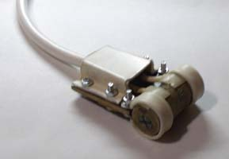
1. Назначение
Малогабаритный импульсный магнитный индуктор с незамкнутым стержневым стальным сердечником разработан и изготовлен для намагничивания, домагничивания (подмагничивания) или частичного размагничивания малогабаритных постоянных магнитов, несъемных магнитов или магнитов, расположенных в труднодоступных местах, а также многополюсного пошагового намагничивания, например, магнитных стикеров, магнитных роторов, магнитных фиксаторов [6]. Индуктор предназначен для работы совместно с емкостным накопителем энергии [4] 1 ... 2 кДж 900 В. Он позволяет производить одноосное по оси сердечника индуктора частичное или полное намагничивание в заданном направлении и частичное размагничивание постоянных магнитов различных марок [7] - ферриты, алнико, редкоземельные магниты (самарий-кобальт и неодим-железо-бор) и магнитопласты на той же основе [5].
2. Конструкция
Упрощенный эскиз магнитного индуктора с незамкнутым стержневым ферромагнитным сердечником диаметром 10 мм приведен на рис. 2.1 (в зависимости от поставленной задачи намагничивания могут использоваться сердечники различных размеров).
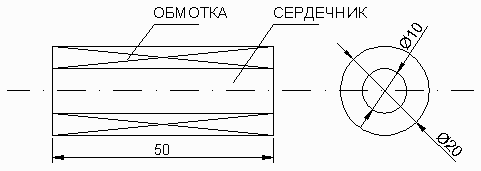
Рис. 2.1. Эскиз магнитного индуктора (в разрезе): стержневой стальной сердечник из малоуглеродистой стали Ст3, медная обмотка в виде цилиндрического соленоида.
Индуктор состоит из цилиндрического соленоида (обмотка), намотанного медным проводом, в отверстие которого вклеен сердечник из малоуглеродистой стали Ст3. Внешний вид индуктора изображен на рис. 2.2. Индуктор крепится к монтажной планке (на эскизе не показана), выводы обмотки соединяются с подключающим силовым кабелем. Конструкция в районе подключения выводов обмотки к кабелю в целях безопасности закрывается защитной крышкой. Противоположные торцы сердечника при прохождении тока становятся противоположными магнитными полюсами - северным и южным. Соответственно, можно менять полярность намагничивания, поворачивая индуктор к магниту другим торцом.
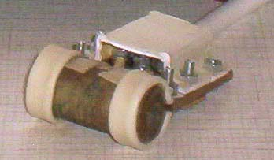
Рис. 2.2. Внешний вид магнитного индуктора с незамкнутым стержневым стальным сердечником.
3. Расчеты
Активное сопротивление и индуктивность цилиндрического соленоида без сердечника, представляющего собой обмотку индуктора, можно найти с помощью программы Coil [2] по его геометрическим размерам и характеристикам обмоточного провода. Результат расчета показан на рис. 3.1. Расчетное активное сопротивление обмотки составляет 0.2713 Ом, индуктивность обмотки (без сердечника) - 0.1532 мГн.
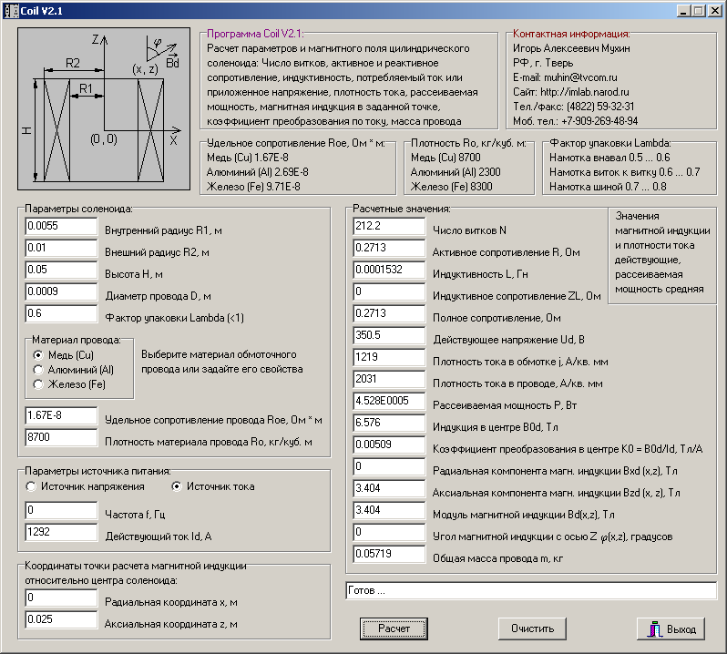
Рис. 3.1. Расчет обмотки индуктора с помощью программы Coil.
Расчеты магнитного поля и индуктивности индуктора с сердечником сделаны методом конечных элементов [10] с помощью Ansoft Maxwell [1] в приближении двумерной осесимметричной модели. Расчетная модель показана на рис. 3.2.
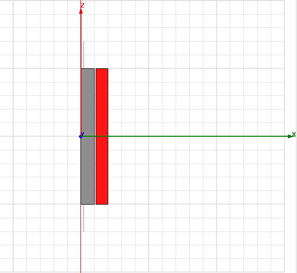
Рис. 3.2. Расчетная модель индуктора в программе Ansoft Maxwell. Шаг сетки 5 мм.
Индуктивность индуктора при магнитодвижущей силе (МДС) 1 А ∙ виток (всего в катушке 212 витков) равна 1.5315 мГн. Таким образом, за счет стального сердечника индуктивность увеличилась примерно в 10 раз.
С помощью программы UNI [3] находим для емкостного накопителя с заданными параметрами (1 кДж 900 В) при индуктивности 1.5315 мГн, расчетном сопротивлении обмотки 0.2713 Ом и сопротивлении подключения 0.15 Ом амплитуду импульса тока 744.4 А (рис. 3.3). Это найденное значение подставляем обратно в программу Ansoft Maxwell (212 ∙ 744.4 ≈ 158000 А ∙ витков) и находим амплитуду магнитной индукции на разных расстояниях от торца сердечника (рис. 3.4).
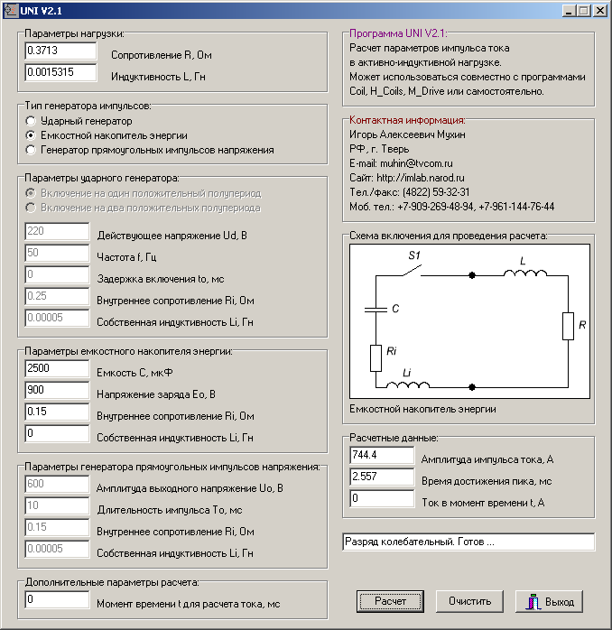
Рис. 3.3. Расчет параметров импульса тока с помощью программы UNI для емкостного накопителя 1 кДж 900 В.
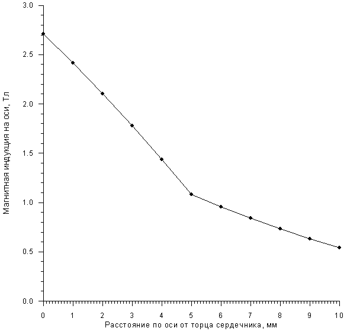
Рис. 3.4. Зависимость расчетного амплитудного значения магнитной индукции на оси от расстояния до торца сердечника индуктора, подключаемого к емкостному накопителю энергии 1 кДж 900 В при 100 % уровне зарядки.
Расчет параметров импульса тока с помощью программы UNI для емкостного накопителя 2 кДж 900 В производится аналогично. Для заданного емкостного накопителя (2 кДж 900 В) при индуктивности 1.5315 мГн, расчетном сопротивлении 0.2713 Ом и сопротивлении подключения 0.1 Ом амплитуда импульса тока равна 905.4 А (рис. 3.5). Это значение используем в программе Ansoft Maxwell в качестве МДС (212 ∙ 905.4 ≈ 192000 А ∙ витков) и находим амплитуду магнитной индукции на разных расстояниях от торца сердечника (рис. 3.6).
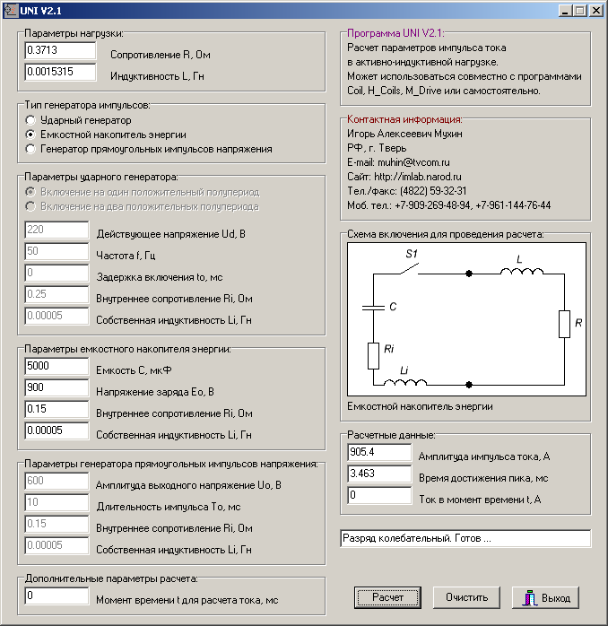
Рис. 3.5. Расчет параметров импульса тока с помощью программы UNI для емкостного накопителя 2 кДж 900 В.
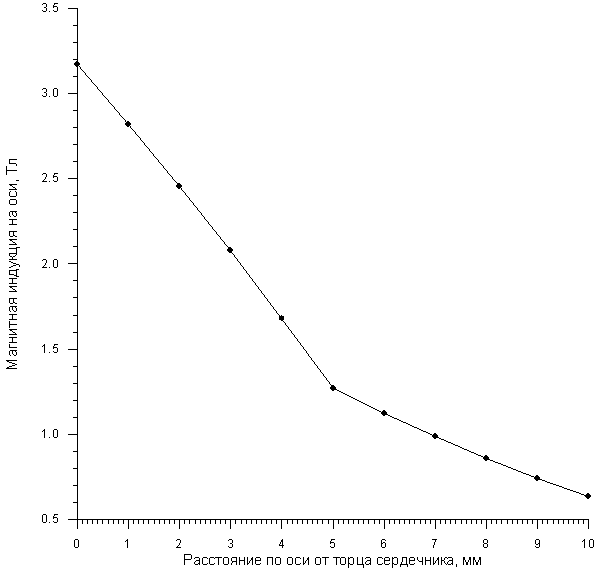
Рис. 3.6. Зависимость расчетного амплитудного значения магнитной индукции на оси от расстояния до торца сердечника индуктора, подключаемого к емкостному накопителю энергии 2 кДж 900 В при 100 % уровне зарядки.
4. Испытания
На рис. 4.1 показан внешний вид установки импульсного намагничивания и частичного размагничивания постоянных магнитов [11] с использованием малогабаритного индуктора и емкостного накопителя энергии 1 кДж 900 В [4]. С помощью импульсного тесламетра [9], имеющего выход с коэффициентом преобразования 1 В/Тл, и осциллографа UTD2102CEL-R измерялись амплитудные значения магнитной индукции на разных расстояниях от торцов индуктора и форма импульсов. Графики зависимости амплитудных значений магнитной индукции на оси индуктора от расстояния до противоположных торцов его сердечника представлены на рис. 4.2. Измеренные амплитудные значения магнитной индукции несколько ниже расчетных (рис. 3.4), что, в частности, объясняется тем фактом, что за счет некоторого слоя изоляции датчик Холла тесламетра находится на самом деле несколько дальше (примерно до 1 мм), нежели предполагается при построении зависимости. Но в целом можно считать, что расчетные данные вполне соответствуют экспериментальным.
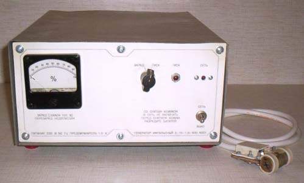
Рис. 4.1. Установка импульсного намагничивания и частичного размагничивания в комплекте с емкостным накопителем энергии 1 кДж 900 В.
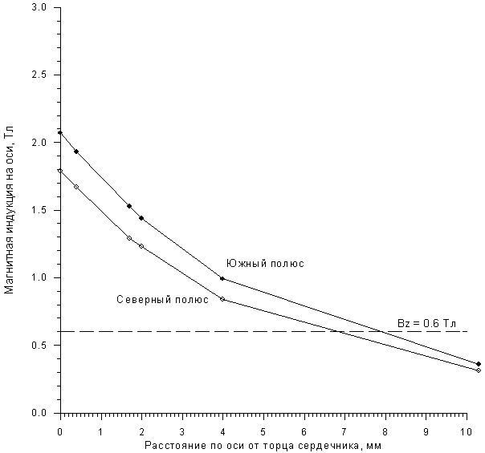
Рис. 4.2. Зависимость амплитудных значений магнитной индукции на оси от расстояния до торцов сердечника индуктора, подключаемого к емкостному накопителю энергии 1 кДж 900 В при 100 % уровне зарядки. Уровень 0.6 Тл примерно соответствует минимально допустимому значению магнитной индукции для намагничивания ферритовых постоянных магнитов до насыщения.
На рис. 4.3 показана форма импульсов магнитной индукции (осевая составляющая) на торце индуктора и на расстоянии 10.3 мм от торца.
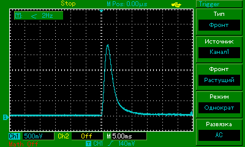
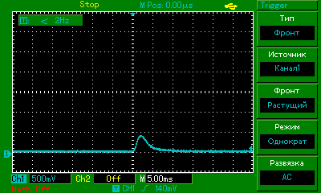
Рис. 4.3. Форма импульсов магнитной индукции на оси индуктора вблизи торца (амплитудное значение 2.3 Тл) и на расстоянии 10.3 мм от него (амплитудное значение 0.4 Тл), подключаемого к емкостному накопителю энергии 1 кДж 900 В (100 % заряд). Длительность импульса примерно равна 3 мс (на уровне половины амплитудного значения).
На рис. 4.4 показан внешний вид установки импульсного намагничивания и частичного размагничивания постоянных магнитов [11] с использованием малогабаритного индуктора и емкостного накопителя энергии 2 кДж 900 В [4]. Графики зависимости амплитудных значений магнитной индукции на оси индуктора от расстояния до противоположных торцов его сердечника представлены на рис. 4.5, а на рис. 4.6 показана форма импульсов магнитной индукции (осевая составляющая) на торце индуктора и на расстоянии 10.3 мм от торца. Соответствие измеренных значений расчетным (рис. 3.6) хорошее.
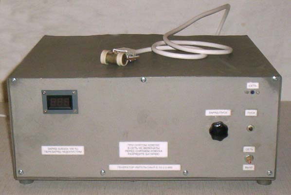
Рис. 4.4. Установка импульсного намагничивания и частичного размагничивания в комплекте с емкостным накопителем энергии 2 кДж 900 В.
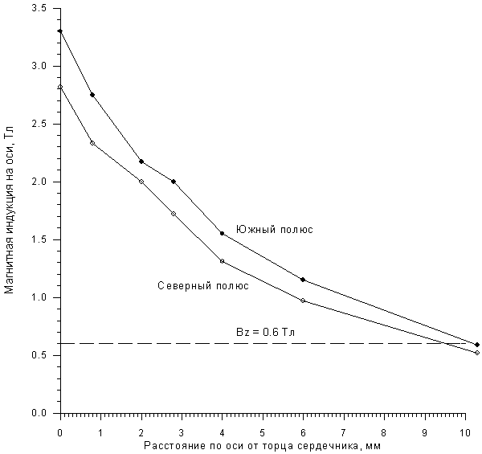
Рис. 4.5. Зависимость амплитудных значений магнитной индукции на оси от расстояния до торцов сердечника индуктора, подключаемого к емкостному накопителю энергии 2 кДж 900 В при 100 % уровне зарядки. Уровень 0.6 Тл примерно соответствует минимально допустимому значению магнитной индукции для намагничивания ферритовых постоянных магнитов до насыщения.
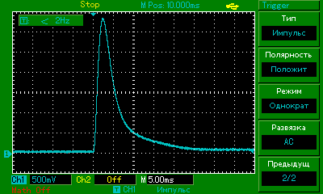 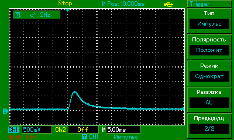
Рис. 4.6. Форма импульсов магнитной индукции на оси индуктора вблизи торца (амплитудное значение 3.3 Тл) и на расстоянии 10.3 мм от него (амплитудное значение 0.7 Тл), подключаемого к емкостному накопителю энергии 2 кДж 900 В (100 % заряд). Длительность импульса примерно равна 5 мс (на уровне половины амплитудного значения).
5. Технические характеристики импульсного индуктора с сердечником диаметром 10 мм
Импульсный индуктор с незамкнутым стержневым ферромагнитным сердечником диаметром 10 мм обладает следующими характеристиками:
6. Применение
6.1. При изготовлении многополюсных магнитных стикеров на основе поролона на поверхность поролона наклеивался крупнозернистый порошок феррита бария в виде площадок (рис. 6.1). Импульсный индуктор использовался для пошагового разнополярного намагничивания этих площадок. Изменение направления намагничивания производилось путем переворота индуктора на 180 градусов. Изображение магнитных полюсов получено с помощью магнитной пленки (рис. 6.1).
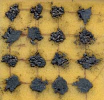
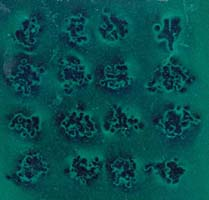
Рис. 6.1. Поролон с наклеенными площадками из феррита бария и изображение магнитного поля после поточечного разнополярного намагничивания индуктором.
6.2. При проведении опытов с магнитными роторами использовалось многополюсное осевое намагничивание ферритового кольца с помощью импульсного индуктора. Сектора кольца намагничивались последовательно друг за другом в чередующейся полярности за счет поворота индуктора на 180 градусов. Для контроля магнитной индукции использовался поворотный столик [8] с тесламетром [9] (рис. 6.2).
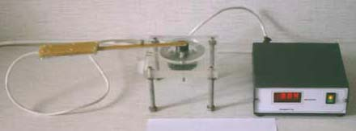
Рис. 6.2. Установка для контроля топографии магнитного поля ферритового кольца с помощью поворотного столика и тесламетра.
6.3. Подмагничивание запрессованного постоянного магнита состава ЮНДК датчика приближения производилось в требуемой полярности при прикладывании к нему соответствующего торца импульсного индуктора.
6.4. С помощью импульсного индуктора можно устранять небольшие вмятины на тонком листовом железе (в частности, на автомобиле).
В зависимости от назначения могут быть изготовлены индукторы с сердечниками различных диаметров.
Ссылки:
26.08.2023
Альтернативные источники
энергии
Компьютеры и
Интернет
Магнитные поля
Механотронные системы
Перспективные
разработки
Электроника и
технология